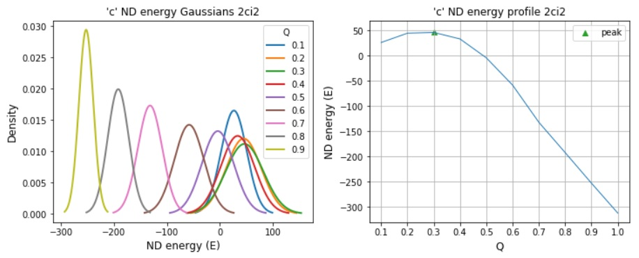

Protein Folding with Shortcut Networks
- Khor S (2016). Protein residue networks from a local search perspective. Journal of Complex Networks 4(2):245-278.
- Khor S (2017). Comparing local search paths with global search paths on protein residue networks: allosteric communication. Journal of Complex Networks 5:409-432.
- Khor S (2018). Folding with a protein's native shortcut network. Proteins: Structure, Function and Bioinformatics 86(9):924-934.
- Khor S (2020). The ND folding model. arXiv:1902.06333 version3+ Submitted.
Mesoscopic investigations
EDS variants: abslv and their folding pathways from native shortcut networks.
Folding pathways from ND generated protein residue networks: $P_{fold}$
Dashboard to explore contact probability maps as a function of Q
Macroscopic investigations
Linear correlation with experimental folding rate: edv=a, ndv=craxy
- Simulated folding rate (peak ND energies).
- Contact-Order of native shortcut networks (SCN0).
- Network clustering (C) of SCN0.
Explore edge probability and energy interactions on fold rate correlation
- Scaling edge probability has an impact; it's not just a nice to have.
- There's some wiggle room with energy interactions; MJ potentials not strictly necessary, but good that it also works.
Model ND energy distributions: edv=a, ndv=craxy
Locating TSE networks within the ND reaction coordinate denoted by Q which is fraction of native shortcuts.
The above three features highlight different aspects of a contact: (i) E is particular about amino acid pairing by native and non-native shortcuts, (ii) Contact-Order is sensitive to sequence distance of native shortcuts, and (iii) C considers the arrangement of native shortcuts relative to each other.Microscopic investigations
Bottom: Calculating phi-values with node centrality from ND generated PRNs.
Calculating phi-values from native-state and transition-state PRNs
Calculating phi-values from ND PRNs: edv=a, ndv=craxy